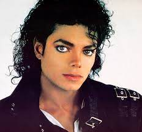
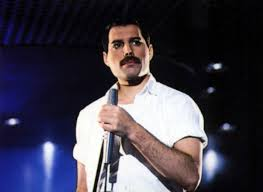
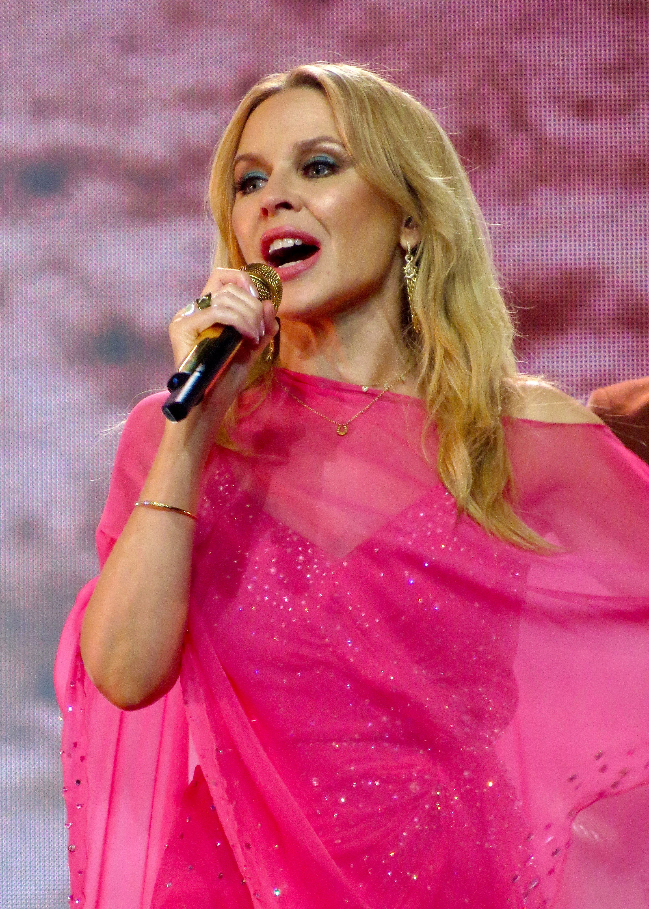

Майкл Джозеф Джексон ( англ . Michael Joseph Jackson ; 29 серпня 1958 , Гері , Індіана - 25 червня 2009 , Лос - Анджелес , Каліфорнія ) - американський співак , автор пісень , музичний продюсер , аранжувальник , сценар , танцюрист підприємець. Один із найуспішніших виконавців в історії поп-музики, відомий як «Король поп-музики», володар 15 премій « Греммі » та сотень інших премій. Кількість проданих у світі записів Джексона ( альбомов , синглів , збірок і т. д.) складає 1 мільярд копій . Майкл Джексон зробив значний внесок у розвиток популярної музики, відеокліпів , танцю та моди.
Фре́дді Ме́рк'юрі (англ. Freddie Mercury, справжнє ім'я: Фаррух Бульсара, Farrokh Bulsara; 5 вересня 1946, Занзібар, Занзібарський султанат — 24 листопада 1991, Лондон) — британський співак, автор пісень і музичний продюсер, відомий передусім як вокаліст та клавішник рок-гурту Queen. Прославився своїм яскравим сценічним образом і чотириоктавним вокальним діапазоном. Написав і виконав багато хітів Queen, зокрема «Bohemian Rhapsody», «Killer Queen», «Somebody to Love», «Don't Stop Me Now», «Crazy Little Thing Called Love», «We Are the Champions». Виступаючи в складі гурту Queen, мав водночас і сольну кар'єру, а іноді був продюсером та запрошеним музикантом для інших колективів.
Кліф Рі́чард (англ. Sir Cliff Richard, | klɪf ˈrɪtʃəd | справжнє ім'я Гаррі Роджер Веб англ. Harry Rodger Webb; 14 жовтня 1940, Лакхнау, Індія) — британський виконавець популярної музики, що одним з перших серед англійців почав виконання у стилі рок-н-рол. Його називають королем британських чартів з тієї причини, що він їх очолював 25 разів, а національний хіт-парад синглів — чотирнадцять разів.
Ка́йлі Енн Міноуг (англ. Kylie Ann Minogue /mɪˈnoʊɡ/; 28 травня 1968, Мельбурн, Австралія) — австралійська попспівачка, авторка пісень й акторка.
Мера́я А́нджела Ке́рі (англ. Mariah Angela Carey; нар. 27 березня 1969) — американська поп, ритм-енд-блюз співачка, авторка пісень, музична продюсерка та акторка. Вона дебютувала 1990 року під керівництвом звукозаписної компанії Columbia Records та її наставника Томмі Мотоли (англ. Tommy Mottola). Мерая стала першою співачкою, чиї дебютні п'ять синглів потрапили на вершину американського чарту Billboard Hot 100. Кері є однією з найбільш фінансово успішних виконавиць 1990-х років.